Invaders
Phoenix II —FAQ (IOS)

BOOKMARK
FAQ (IOS) by light_rock_zz
Version: 4.8 | Updated: 04/27/2025
FAQ of the Month Winner: January 2020 | Highest Rated Guide
Invaders
| Invader Detailed Stats & Mounted Weaponries | |
|---|---|
| Invader Equipment, Health & Appearances | |
Invaders can sometimes appear to be moving outside of your screen boundaries.
- However, they are not actually outside of your straight firing main weapon's
 range, because the camera actually moves when you change sides of the field.
range, because the camera actually moves when you change sides of the field. - This means that there is actually much more horizontal space than you can actually see.
While Invader movements are mostly random, they follow a few rules:
- They generally move within a defined boundary.
- As the playing field size increases, the boundary of their movement also scales accordingly.
- They move in bursts of straight lines.
- The time and distance of the straight line movement is random.
- The boundary stated above means that they also tend to move much more horizontally than vertically.
- When they reach the end of the straight line movement, they will slow down, then they will make their next burst of straight line movement.
- However, if the straight line movement ends up outside of their boundary as mentioned above, they immediately start their next burst of straight line movement without slowing down.
- Invaders don't always spawn in the middle of their boundary zones.
- This is especially so for Eagles that can move horizontally towards the center but can spawn at one side of the screen.
- Generally, Ravens and Sparrows don't care if they completely overlap each other or other bigger Invaders.
- However, Herons or bigger don't overlap more than half of each other or bigger.
- Ravens and Sparrows spawn in a way the chances of them completely overlapping another larger Invader is pretty small.
The XP earned for killing each Invader-class is as shown below.
- It is the same for all ranks and mission types.
- When using revives
 , Invaders killed during the Act you were unable to pass through are also counted.
, Invaders killed during the Act you were unable to pass through are also counted.
| Invader | XP Earned |
|---|---|
| Sparrow | 1 |
| Raven | 6 |
| Heron | 14 |
| Eagle | 24 |
| Vulture | 60 |
| Condor | 100 |
| Roc | 180 |
The XP earned goes into increasing your pilot level. There is no significance to pilot levels other than how much you have played the game.
- A normal Level Up gives you ¢100 and 1 revive .
- If you reach a level that is a multiple of 10, you will earn ¢250 and 5 revives .
- If you reach a level that is a multiple of 100, you will receive ¢1.000 and 25 revives .
The XP required to reach the next pilot level is not well known. It is estimated to be 67.318 × log10(Invaders Killed) - 234. Note that different Invaders killed give different XPs, so this may not be the most reliable way, and the error of margin could be 5 pilot levels. Currently, the data collected up to Level 18 is shown below.
| Pilot Lvl | XP to reach lvl |
|---|---|
| 1 | 0 |
| 2 | 40 |
| 3 | 150 |
| 4 | 260 |
| 5 | 380 |
| 6 | 490 |
| 7 | 610 |
| 8 | 740 |
| 9 | 860 |
| 10 | 990 |
| 11 | 1120 |
| 12 | 1260 |
| 13 | 1390 |
| 14 | 1540 |
| 15 | 1680 |
| 16 | 1830 |
| 17 | 1970 |
| 18 | 2130 |
Invader Equipment, Health & Appearances
Sparrows
From left to right:
- Elite Unprotected
- Imperial Shielded

- Sinister Shielded
- Assault Armored

- Sinister Armored
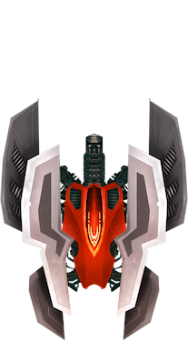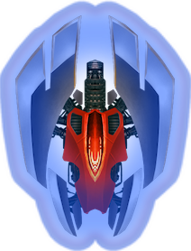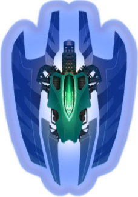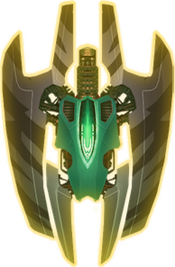
Sparrows can be equipped with only one static turret based on the mission type, as follows:
- General - No Rangs
 : Static Pellet Launcher (A/B), Static Dart Launcher (A/B), Static Shuriken Launcher (A/B), Static Laser
: Static Pellet Launcher (A/B), Static Dart Launcher (A/B), Static Shuriken Launcher (A/B), Static Laser - General - No Lasers : Static Pellet Launcher (A/B), Static Dart Launcher (A/B), Static Shuriken Launcher (A/B)
- General - No Pellets : Static Dart Launcher (A/B), Static Shuriken Launcher (A/B), Static Laser, Static Speed Laser
- Lasers Only : Static Laser, Static Speed Laser
- Laser/Pellet : Static Pellet Launcher (A/B), Static Laser, Static Speed Laser
- Laser/Shuriken
 : Static Shuriken Launcher (A/B), Static Laser
: Static Shuriken Launcher (A/B), Static Laser - Shuriken/Pellet/Laser : Static Pellet Launcher (A/B), Static Shuriken Launcher (A/B), Static Laser
- Dart/Boomerang/Pellet : Static Pellet Launcher (A/B), Static Dart Launcher (A/B)
- Dart/Boomerang/Laser : Static Dart Launcher (A/B), Static Laser
- Shuriken/MIRV(A) : Static Shuriken Launcher (A/B)
- Shuriken/MIRV(B) : Static Shuriken Launcher (A/B)
- Dart/MIRV : Static Pellet Launcher (A/B), Static Dart Launcher (A/B)
- Shuriken/Boomerang/MIRV : Static Pellet Launcher (A/B), Static Shuriken Launcher (A/B)
- Dart/Pellet/Laser : Static Pellet Launcher (A/B), Static Dart Launcher (A/B), Static Laser
| Score when destroyed | 150 |
|---|---|
| Energy given when destroyed | 5 |
| XP gained when destroyed | 1 |
| Earliest Appearance | Act 1 |
| Wave Arrival Speed | 500 |
| Hover Speed | 120 or 60 |
The health of the different affinities of Sparrows are as shown. The turret on a Sparrow cannot be destroyed without destroying the Sparrow itself.
- Unprotected = 5 HP
- Shielded = 2 HP Shield + 3 HP Body
- Armored = 4 HP
Sparrows can also be equipped with Caged MIRVs  .
.
Trivia 1: Here are early versions of Sparrows which were used back in the game's early versions, which were all of Imperial class. From top to bottom, Unprotected, Armored & Shielded. Also, note the different symbols used to represent Unprotected, Armored & Shielded Invaders in the past.
Trivia 2: Here are some representations of Sparrows that the devs use when designing the different wave formations:
Ravens
From left to right:
- Elite Unprotected
- Imperial Shielded
- Sinister Shielded
- Assault Armored
- Sinister Armored
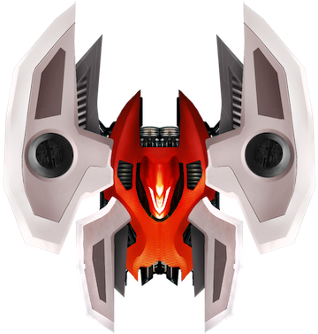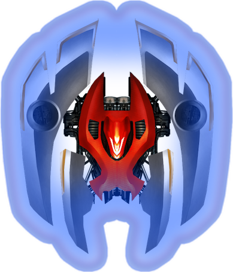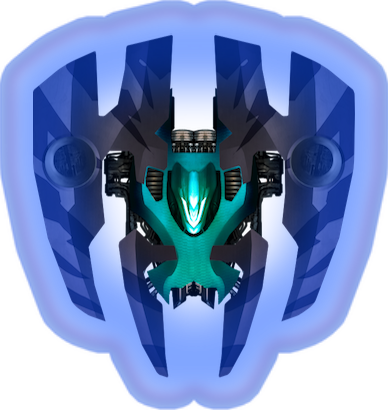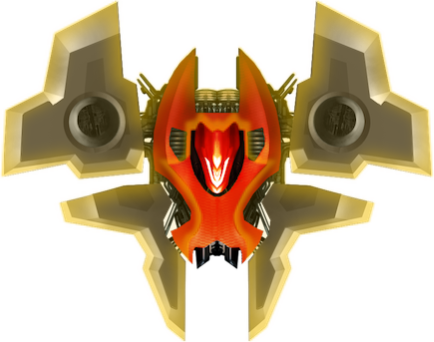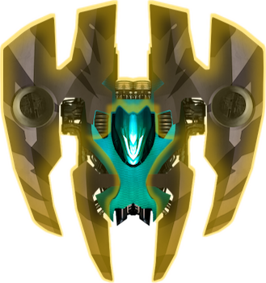
Both mount points can choose from the following pool of turrets in their respective missions types as shown below:
- General - No Rangs : Pellet Launcher/Spread (T1-T3), Dart Launcher/Spread (T1-T3), Shuriken Wave Launcher (T1-T2), Tracking Laser (T1-T3)
- General - No Lasers : Pellet Launcher/Spread (T1-T3), Dart Launcher/Spread (T1-T3), Shuriken Launcher (T1-T2), Shuriken Wave Launcher (T1-T2), Boomerang (T1-T2)
- General - No Pellets : Dart Launcher/Spread (T1-T3), Shuriken Launcher (T1-T2), Shuriken Wave Launcher (T1-T2), Boomerang (T1-T2), Tracking Laser (T1-T3), Speed Laser (T1-T3)
- Lasers Only : Tracking Laser (T1-T3), Cone Laser (T1-T2), Speed Laser (T1-T3), MIRV Launcher (T1-T2)
- Laser/Pellet : Pellet Launcher/Spread (T1-T3), Tracking Laser (T1-T3), Cone Laser (T1-T2), Speed Laser (T1-T3), MIRV Launcher (T1-T2)
- Laser/Shuriken : Shuriken Launcher (T1-T2), Shuriken Wave Launcher (T1-T2), Tracking Laser (T1-T3), Cone Laser (T1-T2), MIRV Launcher (T1-T2)
- Shuriken/Pellet/Laser : Pellet Launcher/Spread (T1-T4), Shuriken Launcher (T1-T2), Shuriken Wave Launcher (T1-T2), Tracking Laser (T1-T3), Cone Laser (T1-T2), MIRV Launcher (T1-T2)
- Dart/Boomerang/Pellet : Pellet Launcher/Spread (T1-T3), Dart Launcher/Spread (T1-T3), Boomerang (T1-T2)
- Dart/Boomerang/Laser : Dart Launcher/Spread (T1-T3), Boomerang (T1-T2), Tracking Laser (T1-T3), Cone Laser (T1-T2)
- Shuriken/MIRV(A) : Pellet Launcher/Spread (T1-T3), Shuriken Launcher (T1-T2), MIRV Launcher (T1-T2)
- Shuriken/MIRV(B) : Pellet Launcher/Spread (T1-T3), Shuriken Launcher (T1-T2), MIRV Launcher (T1)
- Dart/MIRV : Pellet Launcher/Spread (T1-T3), Dart Launcher/Spread (T1-T3), MIRV Launcher (T1-T2)
- Shuriken/Boomerang/MIRV : Pellet Launcher/Spread (T1-T3), Shuriken Launcher (T1-T2), Boomerang (T1-T2)
- Dart/Pellet/Laser : Pellet Launcher/Spread (T1-T3), Dart Launcher/Spread (T1-T3), Tracking Laser (T1-T3), Cone Laser (T1-T2)
| Score when destroyed | 250 |
|---|---|
| Energy given when destroyed | 20 |
| XP gained when destroyed | 6 |
| Earliest Appearance | Act 1 |
| Wave Arrival Speed | 450 |
| Hover Speed | 90 |
The health of the different affinities of Ravens are as shown. All turrets on a Raven have the same health and are shown below.
- Unprotected = 27 HP. Turret Health = 8.1 HP.
- Shielded = 13 HP Shield + 18 HP Body. Turret Health = 5.4 HP.
- Armored = 24 HP. Turret Health = 7.2 HP.
Trivia 1: Here's a picture of a Raven in the pre-alpha version of Phoenix 2, alongside a pre-alpha T2 Dart Launcher:
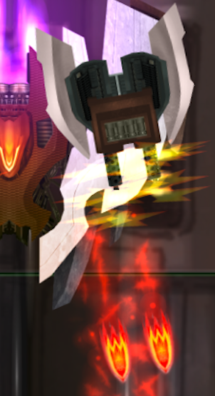
Trivia 2: Here's a unique Sinister Raven model, using an Assault Raven Shield (instead of the usual Sinister Raven Shield). It is actually used in Campaign Missions #13 and #14.
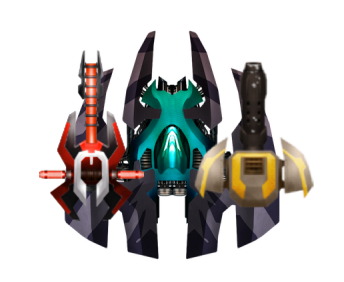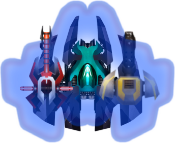
Trivia 3: Here are some representations of Ravens that the devs use when designing the different wave formations:
Herons
From left to right:
- Elite Unprotected
- Imperial Shielded
- Sinister Shielded
- Assault Armored
- Sinister Armored
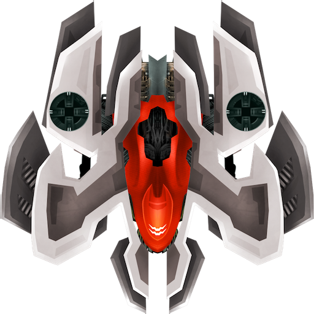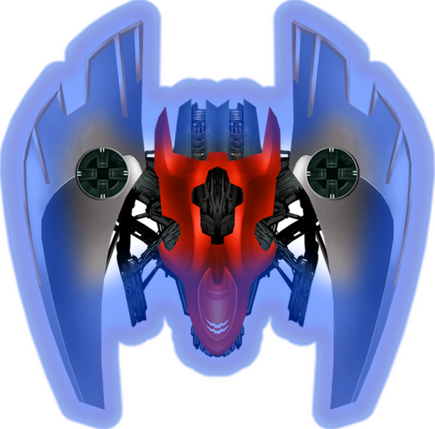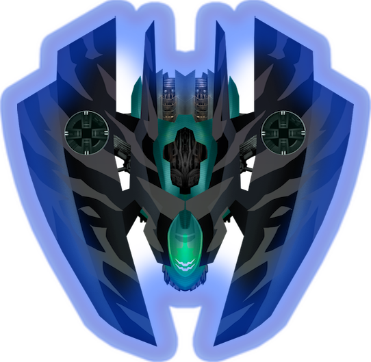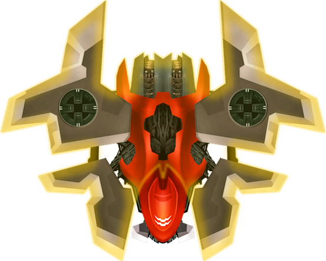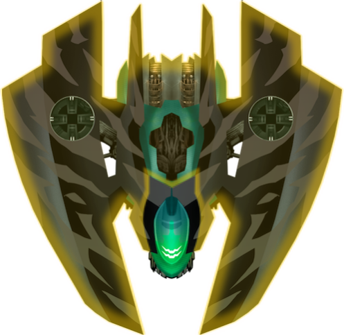
Both its side 2 turret mounts will always have the same turret, which varies from the list below:
- General - No Rangs : Pellet Launcher/Spread (T1-T3), Dart Launcher/Spread (T1-T3), Shuriken Wave Launcher (T1-T4), Tracking Laser (T1-T4)
- General - No Lasers : Pellet Launcher/Spread (T1-T3), Dart Launcher/Spread (T1-T3), Shuriken Launcher (T1-T3), Shuriken Wave Launcher (T1-T4), Boomerang (T1-T2)
- General - No Pellets : Dart Launcher/Spread (T1-T3), Shuriken Launcher (T1-T3), Shuriken Wave Launcher (T1-T4), Boomerang (T1-T2), Tracking Laser (T1-T3), Speed Laser (T1-T3)
- Lasers Only : Tracking Laser (T1-T4), Cone Laser (T1-T2), Speed Laser (T1-T3), MIRV Launcher/Spread (T1-T3)
- Laser/Pellet : Pellet Launcher/Spread (T1-T3), Tracking Laser (T1-T3), Cone Laser (T1-T2), Speed Laser (T1-T3), MIRV Launcher (T1-T2)
- Laser/Shuriken : Shuriken Launcher (T1-T3), Shuriken Wave Launcher (T1-T4), Tracking Laser (T1-T3), Cone Laser (T1-T2), MIRV Launcher (T1-T2)
- Shuriken/Pellet/Laser : Pellet Launcher/Spread (T1-T4), Shuriken Launcher (T1-T3), Shuriken Wave Launcher (T1-T4), Tracking Laser (T1-T3), Cone Laser (T1-T2), MIRV Launcher (T1-T2)
- Dart/Boomerang/Pellet : Pellet Launcher/Spread (T1-T3), Dart Launcher/Spread (T1-T3), Boomerang (T1-T2)
- Dart/Boomerang/Laser : Dart Launcher/Spread (T1-T3), Boomerang (T1-T2), Tracking Laser (T1-T3), Cone Laser (T1-T2)
- Shuriken/MIRV(A) : Pellet Launcher/Spread (T1-T3), Shuriken Launcher (T1-T3), MIRV Launcher (T1-T2)
- Shuriken/MIRV(B) : Pellet Launcher/Spread (T1-T3), Shuriken Launcher (T1-T3), MIRV Launcher (T1)
- Dart/MIRV : Pellet Launcher/Spread (T1-T3), Dart Launcher/Spread (T1-T3), MIRV Launcher (T1-T2)
- Shuriken/Boomerang/MIRV : Pellet Launcher/Spread (T1-T3), Shuriken Launcher (T1-T3), Boomerang (T1-T2)
- Dart/Pellet/Laser : Pellet Launcher/Spread (T1-T3), Dart Launcher/Spread (T1-T3), Tracking Laser (T1-T3), Cone Laser (T1-T2)
The middle turret is a static turret follows the same selection that a Sparrow can have for the respective mission types. The list of static turrets is repeated as follows:
- General - No Rangs : Static Pellet Launcher (A/B), Static Dart Launcher (A/B), Static Shuriken Launcher (A/B), Static Laser
- General - No Lasers : Static Pellet Launcher (A/B), Static Dart Launcher (A/B), Static Shuriken Launcher (A/B)
- General - No Pellets : Static Dart Launcher (A/B), Static Shuriken Launcher (A/B), Static Laser, Static Speed Laser
- Lasers Only : Static Laser, Static Speed Laser
- Laser/Pellet : Static Pellet Launcher (A/B), Static Laser, Static Speed Laser
- Laser/Shuriken : Static Shuriken Launcher (A/B), Static Laser
- Shuriken/Pellet/Laser : Static Pellet Launcher (A/B), Static Shuriken Launcher (A/B), Static Laser
- Dart/Boomerang/Pellet : Static Pellet Launcher (A/B), Static Dart Launcher (A/B)
- Dart/Boomerang/Laser : Static Dart Launcher (A/B), Static Laser
- Shuriken/MIRV(A) : Static Shuriken Launcher (A/B)
- Shuriken/MIRV(B) : Static Shuriken Launcher (A/B)
- Dart/MIRV : Static Pellet Launcher (A/B), Static Dart Launcher (A/B)
- Shuriken/Boomerang/MIRV : Static Pellet Launcher (A/B), Static Shuriken Launcher (A/B)
- Dart/Pellet/Laser : Static Pellet Launcher (A/B), Static Dart Launcher (A/B), Static Laser
| Score when destroyed | 275 |
|---|---|
| Energy given when destroyed | 25 |
| XP gained when destroyed | 14 |
| Earliest Appearance | Act 1 |
| Wave Arrival Speed | 425 |
| Hover Speed | 75 |
The health of the different affinities of Herons are as shown. All Turrets on a Heron have the same health and are shown below.
- Unprotected = 63 HP. Turret Health = 12.6 HP.
- Shielded = 31 HP Shield + 42 HP Body. Turret Health = 8.4 HP.
- Armored = 56 HP. Turret Health = 11.2 HP.
Trivia 1: Here is a representation of Herons that the devs use when designing the different wave formations:
 |
Trivia 2: At some point, the devs were considering to use the cockpit of Herons as the app icon, as shown below:
Eagles
From left to right:
- Elite Unprotected
- Imperial Shielded
- Sinister Shielded
- Assault Armored
- Sinister Armored
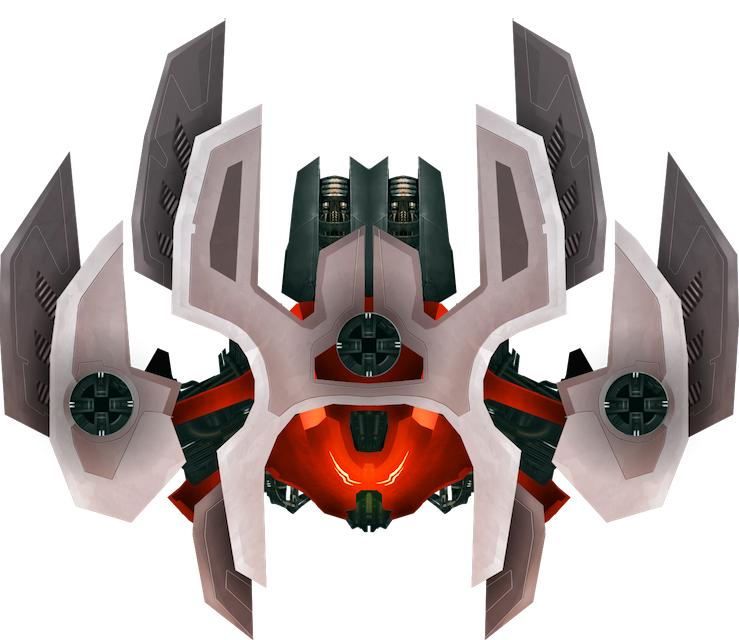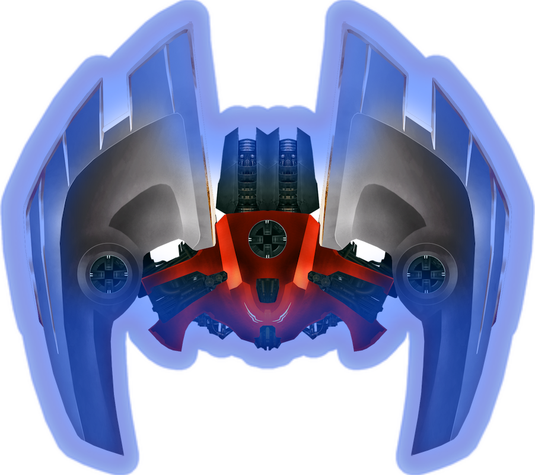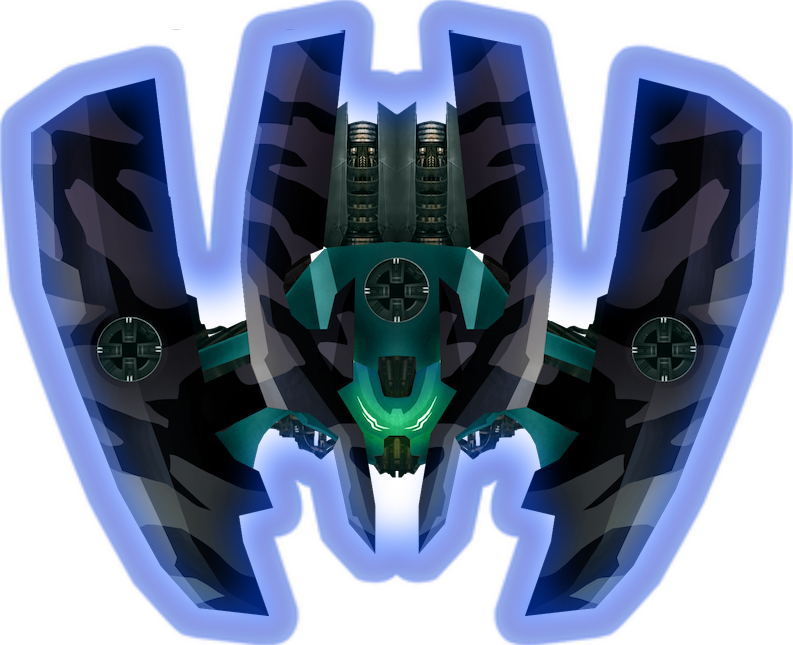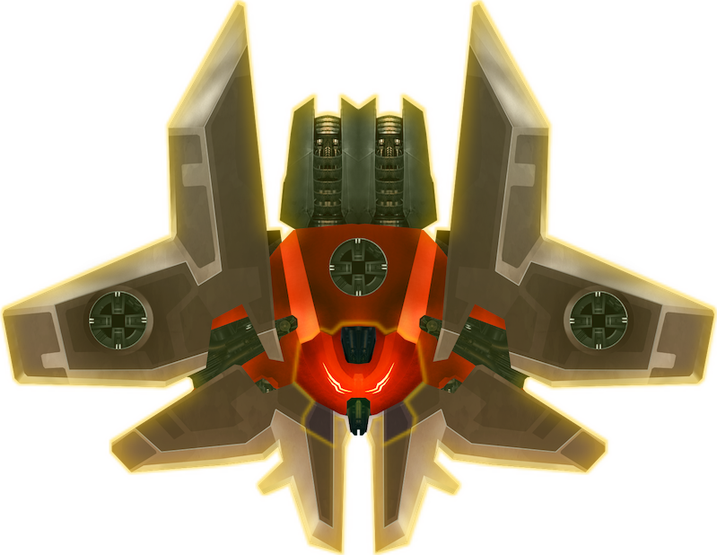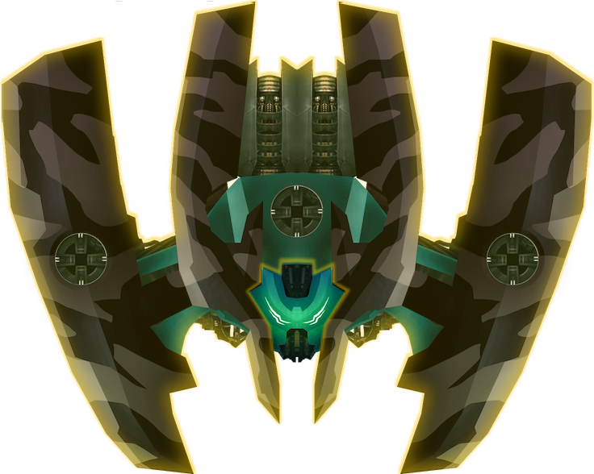
Both its side 2 turret mounts will always have the same turret. For the middle turret, the range is expanded to include more turrets (and includes all of the possible ones from its side turret mounts). If the turret is marked in italics, it can only be on the middle turret.
- General - No Rangs : Pellet Launcher/Spread (T1-T4), Dart Launcher/Spread (T1-T4), Shuriken Wave Launcher (T1-T4), Tracking Laser (T1-T4)
- Middle Turret + Dart Spinners (T1-T4), Pellet Spinners (Lane) (T1-T4), Pellet Spinners (Spiral) (T1-T4), Shuriken Spinners (T1-T4)
- General - No Lasers : Pellet Launcher/Spread (T1-T4), Dart Launcher/Spread (T1-T4), Shuriken Launcher (T1-T4), Shuriken Wave Launcher (T1-T4), Boomerang (T1-T4)
- Middle Turret + Dart Spinners (T1-T4), Pellet Spinners (Lane) (T1-T4), Pellet Spinners (Spiral) (T1-T4), Shuriken Spinners (T1-T4)
- General - No Pellets : Dart Launcher/Spread (T1-T4), Shuriken Launcher (T1-T4), Shuriken Wave Launcher (T1-T4), Boomerang (T1-T4), Tracking Laser (T1-T4), Speed Laser (T1-T4)
- Middle Turret + Dart Spinners (T1-T4), Shuriken Spinners (T1-T4)
- Lasers Only : Tracking Laser (T1-T4), Cone Laser (T1-T3), Speed Laser (T1-T4), MIRV Launcher/Spread (T1-T3)
- Middle Turret + Cone Laser (T4), MIRV Spread (T4), MIRV Bloomer (T1-T4)
- Laser/Pellet : Pellet Launcher/Spread (T1-T4), Tracking Laser (T1-T4), Cone Laser (T1-T3), Speed Laser (T1-T4), MIRV Launcher (T1-T2)
- Middle Turret + Cone Laser (T4), MIRV Spread (T3-T4), Pellet Spinners (Lane) (T1-T4), Pellet Spinners (Spiral) (T1-T4), MIRV Bloomer (T1-T4)
- Laser/Shuriken : Shuriken Launcher (T1-T4), Shuriken Wave Launcher (T1-T4), Tracking Laser (T1-T4), Cone Laser (T1-T3), MIRV Launcher (T1-T2)
- Middle Turret + Cone Laser (T4), MIRV Spread (T3-T4), Shuriken Spinners (T1-T4), MIRV Bloomer (T1-T4)
- Shuriken/Pellet/Laser : Pellet Launcher/Spread (T1-T4), Shuriken Launcher (T1-T4), Shuriken Wave Launcher (T1-T4), Tracking Laser (T1-T4), Cone Laser (T1-T3), MIRV Launcher (T1-T2)
- Middle Turret + Cone Laser (T4), MIRV Spread (T3-T4), Shuriken Spinners (T1-T4), MIRV Bloomer (T1-T4)
- Dart/Boomerang/Pellet : Pellet Launcher/Spread (T1-T4), Dart Launcher/Spread (T1-T4), Boomerang (T1-T4)
- Middle Turret + Pellet Spinners (Spiral) (T1-T4), Dart Spinners (T1-T4)
- Dart/Boomerang/Laser : Dart Launcher/Spread (T1-T4), Boomerang (T1-T4), Tracking Laser (T1-T4), Cone Laser (T1-T3)
- Middle Turret + Cone Laser (T4), Dart Spinners (T1-T4)
- Shuriken/MIRV(A) : Pellet Launcher/Spread (T1-T4), Shuriken Launcher (T1-T4), MIRV Launcher/Spread (T1-T3)
- Middle Turret + MIRV Spread (T4), Pellet Spinners (Lane) (T1-T4), Pellet Spinners (Spiral) (T1-T4), Shuriken Spinners (T1-T4), MIRV Bloomer (T1-T3)
- Shuriken/MIRV(B) : Pellet Launcher/Spread (T1-T4), Shuriken Launcher (T1-T4), MIRV Launcher/Spread (T1-T3)
- Middle Turret + MIRV Spread (T4), Pellet Spinners (Lane) (T1-T4), Pellet Spinners (Spiral) (T1-T4), Shuriken Spinners (T1-T4), MIRV Bloomer (T1-T3)
- Dart/MIRV : Pellet Launcher/Spread (T1-T4), Dart Launcher/Spread (T1-T4), MIRV Launcher/Spread (T1-T3)
- Middle Turret + MIRV Spread (T4), Pellet Spinners (Lane) (T1-T4), Pellet Spinners (Spiral) (T1-T4), Dart Spinners (T1-T4), MIRV Bloomer (T1-T3)
- Shuriken/Boomerang/MIRV : Pellet Launcher/Spread (T1-T4), Shuriken Launcher (T1-T4), Boomerang (T1-T4), MIRV Launcher/Spread (T1-T3)
- Middle Turret + MIRV Spread (T4), Pellet Spinners (Lane) (T1-T4), Pellet Spinners (Spiral) (T1-T4), Shuriken Spinners (T1-T4), MIRV Bloomer (T1-T3)
- Dart/Pellet/Laser : Pellet Launcher/Spread (T1-T4), Dart Launcher/Spread (T1-T4), Tracking Laser (T1-T4), Cone Laser (T1-T3)
- Middle Turret + Cone Laser (T4), Pellet Spinners (Lane) (T1-T4), Pellet Spinners (Spiral) (T1-T4), Dart Spinners (T1-T4)
| Score when destroyed | 300 |
|---|---|
| Energy given when destroyed | 30 |
| XP gained when destroyed | 24 |
| Earliest Appearance | Act 2 |
| Wave Arrival Speed | 400 |
| Hover Speed | 50 |
The health of the different affinities of Eagles are as shown. All Turrets on an Eagle have the same health and are shown below.
- Unprotected = 110 HP. Turret Health = 22 HP.
- Shielded = 55 HP Shield + 73 HP Body. Turret Health = 14.6 HP.
- Armored = 99 HP. Turret Health = 19.8 HP.
Here's how the cockpit of an Armored Assault Eagle would look like:
Trivia: Here are some representations of Eagles that the devs use when designing the different wave formations:
| 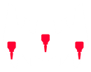 |
Vultures
From left to right:
- Elite Unprotected
- Imperial Shielded
- Sinister Shielded
- Assault Armored
- Sinister Armored
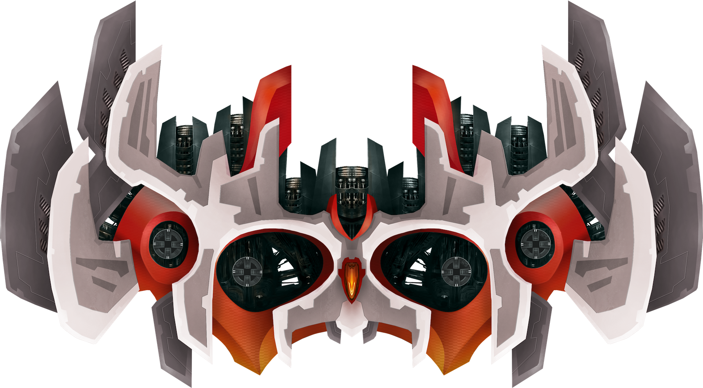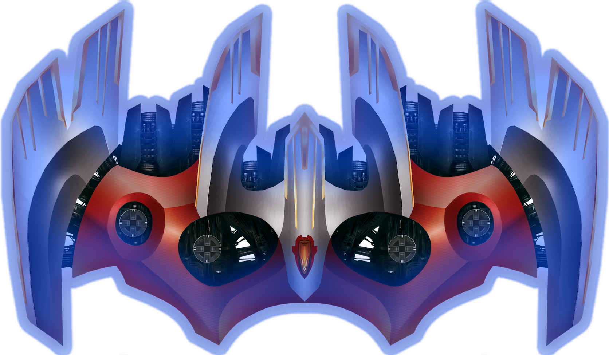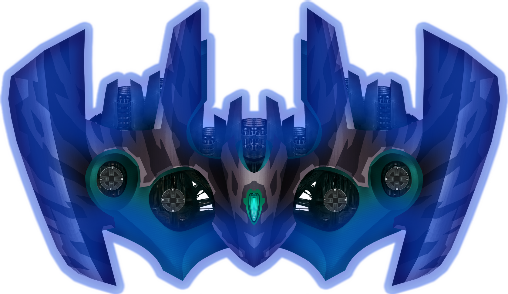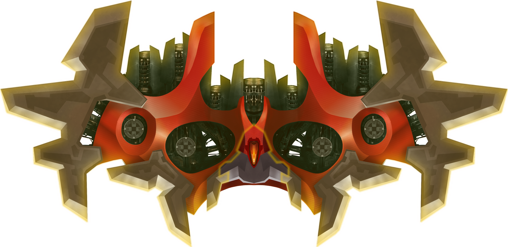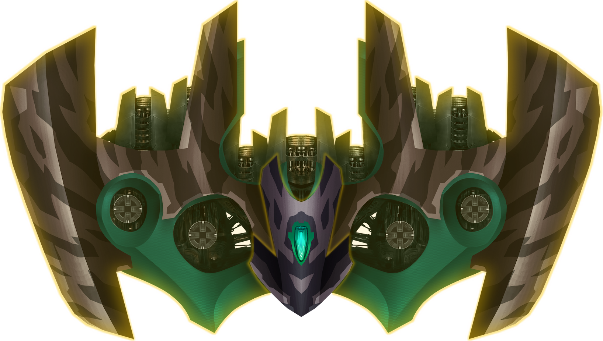
The list of turrets on a Vulture is as listed below. Note that Vultures need not be symmetrical and every turret slot can hold any possible turret in the list below. All turrets have the full range from T1 - T4 (aside from Doomsday weapons which have no tiers).
- General - No Rangs : Pellet Launcher/Spread, Dart Launcher/Spread, Shuriken Wave Launcher, Tracking Laser, Dart Spinners, Pellet Spinners (Lane), Pellet Spinners (Spiral), Shuriken Spinners, Doomsday Laser, Doomsday Bomb
- General - No Lasers : Pellet Launcher/Spread, Dart Launcher/Spread, Shuriken Launcher, Shuriken Wave Launcher, Boomerang, Dart Spinners, Pellet Spinners (Lane), Pellet Spinners (Spiral), Shuriken Spinners, Doomsday Bomb
- General - No Pellets : Dart Launcher/Spread, Shuriken Launcher, Shuriken Wave Launcher, Boomerang, Tracking Laser, Speed Laser, Dart Spinners, Shuriken Spinners, Doomsday Laser, Doomsday Bomb
- Lasers Only : Tracking Laser, Cone Laser, Speed Laser, MIRV Launcher/Spread, MIRV Bloomer, Doomsday Laser
- Laser/Pellet : Pellet Launcher/Spread, Tracking Laser, Cone Laser, Speed Laser, MIRV Launcher/Spread, Pellet Spinners (Lane), Pellet Spinners (Spiral), MIRV Bloomer, Doomsday Laser
- Laser/Shuriken : Shuriken Launcher, Shuriken Wave Launcher, Tracking Laser, Cone Laser, MIRV Launcher/Spread, Shuriken Spinners, MIRV Bloomer, Doomsday Bomb, Doomsday Super MIRV
- Shuriken/Pellet/Laser : Pellet Launcher/Spread, Shuriken Launcher, Shuriken Wave Launcher, Tracking Laser, Cone Laser, MIRV Launcher/Spread, Shuriken Spinners, MIRV Bloomer, Doomsday Bomb
- Dart/Boomerang/Pellet : Pellet Launcher/Spread, Dart Launcher/Spread, Boomerang, Pellet Spinners (Spiral), Dart Spinners, Doomsday Bomb
- Dart/Boomerang/Laser : Dart Launcher/Spread, Boomerang, Tracking Laser, Cone Laser, Dart Spinners, Doomsday Laser
- Shuriken/MIRV(A) : Pellet Launcher/Spread, Shuriken Launcher, MIRV Launcher/Spread, Pellet Spinners (Lane), Pellet Spinners (Spiral), Shuriken Spinners, MIRV Bloomer, Doomsday Bomb, Doomsday Super MIRV
- Shuriken/MIRV(B) : Pellet Launcher/Spread, Shuriken Launcher, MIRV Launcher/Spread, Pellet Spinners (Lane), Pellet Spinners (Spiral), Shuriken Spinners, MIRV Bloomer
- Dart/MIRV : Pellet Launcher/Spread, Dart Launcher/Spread, MIRV Launcher/Spread, Pellet Spinners (Lane), Pellet Spinners (Spiral), Dart Spinners, MIRV Bloomer, Doomsday Super MIRV
- Shuriken/Boomerang/MIRV : Pellet Launcher/Spread, Shuriken Launcher, Boomerang, MIRV Launcher/Spread, Pellet Spinners (Lane), Pellet Spinners (Spiral), Shuriken Spinners, MIRV Bloomer, Doomsday Bomb
- Dart/Pellet/Laser : Pellet Launcher/Spread, Dart Launcher/Spread, Tracking Laser, Cone Laser, Pellet Spinners (Lane), Pellet Spinners (Spiral), Dart Spinners, Doomsday Laser, Doomsday Bomb
| Score when destroyed | 350 |
|---|---|
| Energy given when destroyed | 60 |
| XP gained when destroyed | 60 |
| Earliest Appearance | Act 3 |
| Wave Arrival Speed | 200 |
| Hover Speed | 20 |
The health of the different affinities of Vultures are as shown. All Turrets on a Vulture have the same health and are shown below.
- Unprotected = 270 HP. Turret Health = 40.5 HP.
- Shielded = 135 HP Shield + 180 HP Body. Turret Health = 27 HP.
- Armored = 243 HP. Turret Health = 36.45 HP.
Trivia 1: Here's a picture of a Vulture in the pre-alpha version of Phoenix 2, along with pre-alpha T1 & T2 pellet launchers:
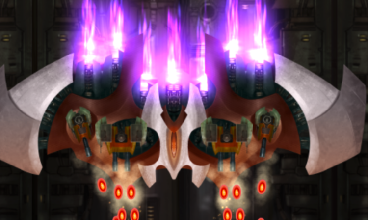
Trivia 2: Here are some representations of Vultures that the devs use when designing the different wave formations:
| 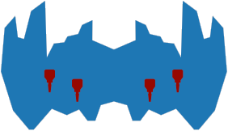 |  | 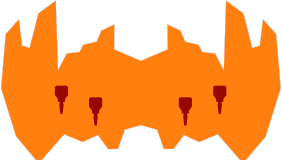 |
Condors
From left to right:
- Elite Unprotected
- Imperial Shielded
- Sinister Shielded
- Assault Armored
- Sinister Armored
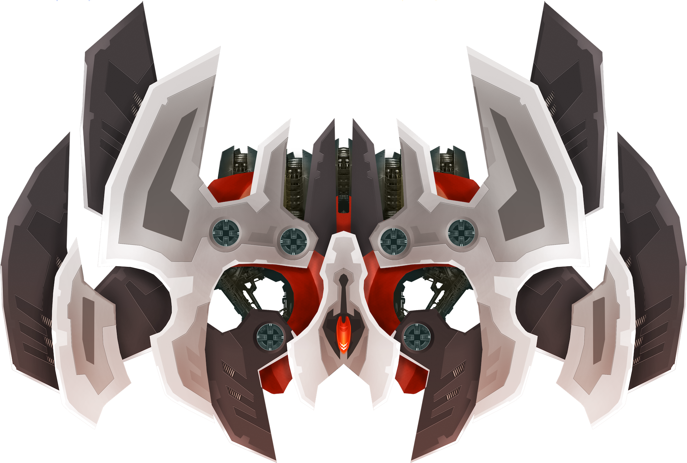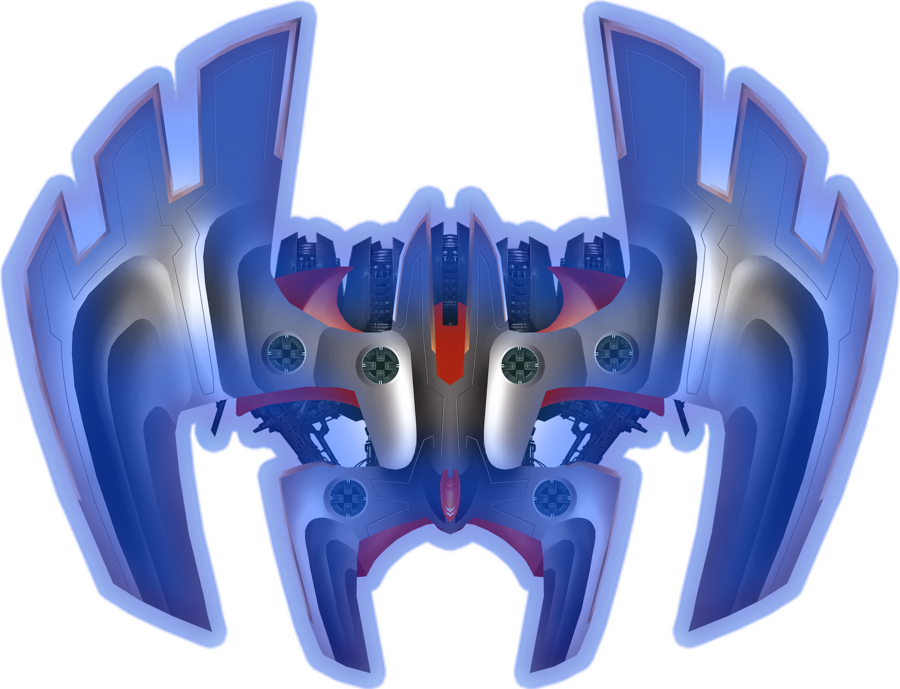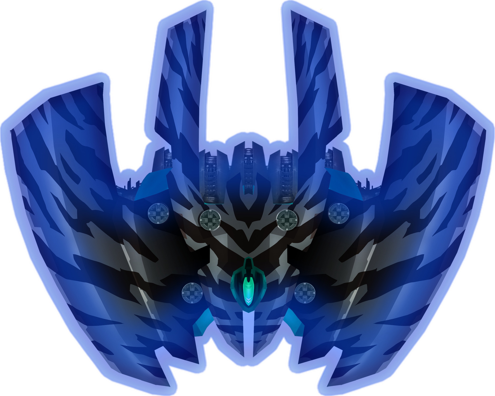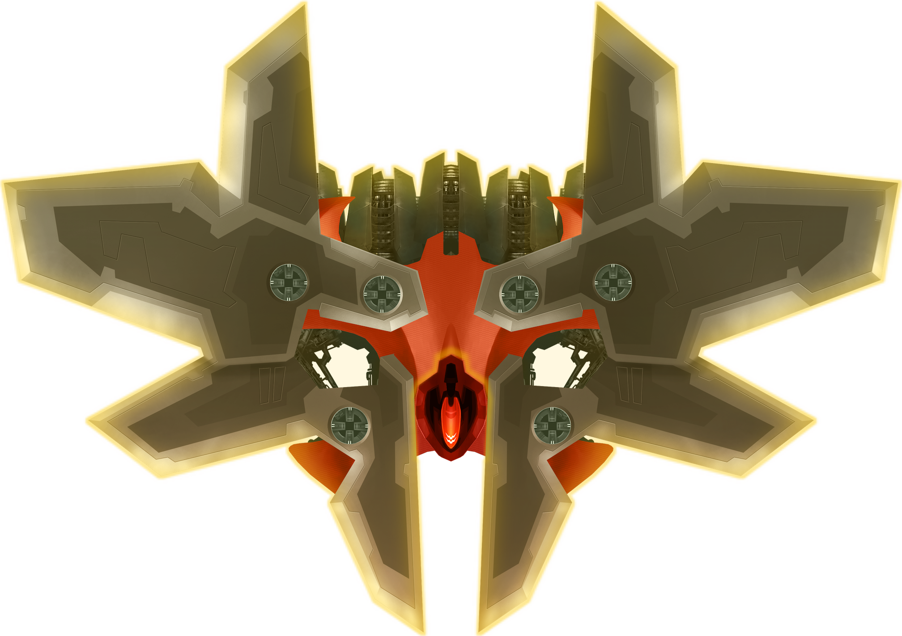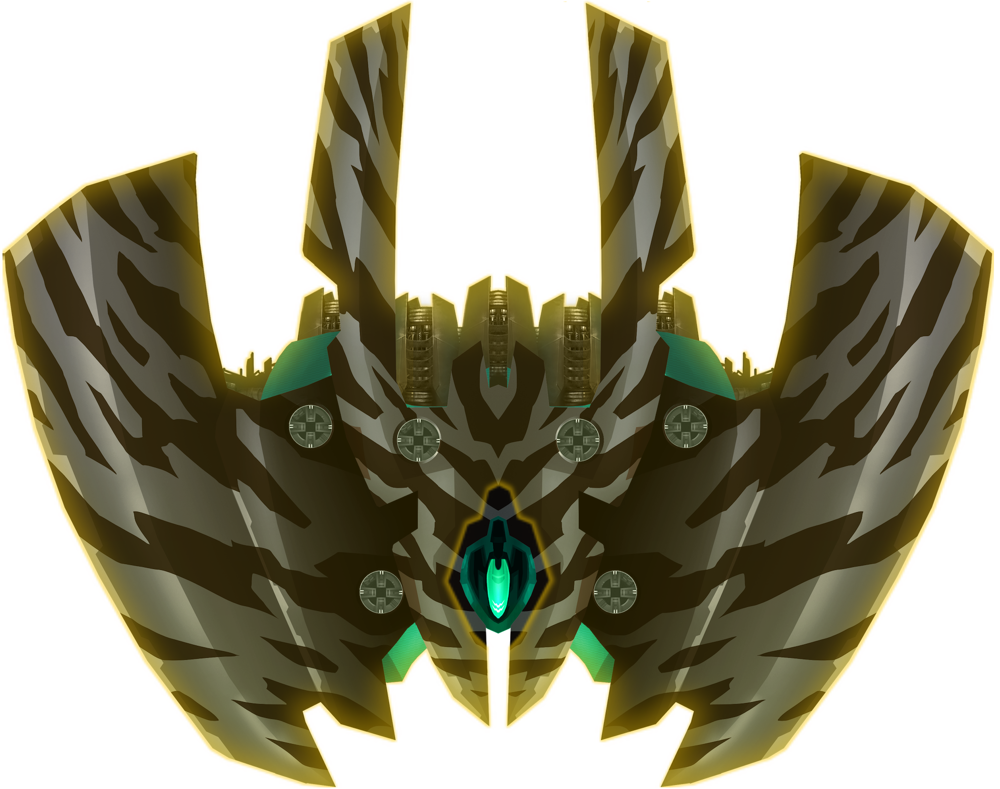
The list of turrets on a Condor is identical to that of Vultures  . Every turret slot can hold any possible turret.
. Every turret slot can hold any possible turret.
| Score when destroyed | 750 |
|---|---|
| Energy given when destroyed | 80 |
| XP gained when destroyed | 100 |
| Earliest Appearance | Act 4 (Daily Act 5 (Community missions |
| Wave Arrival Speed | 200 |
| Hover Speed | 15 |
It is frequently accompanied by a "welcoming party" which can be as heavy as 2 Eagles and a Heron  , or as light as only Sparrows
, or as light as only Sparrows  . This "welcoming party" appears in front of the Condor and come in first. These smaller enemies will come in immediately while the Condor will take the full 3s to arrive.
. This "welcoming party" appears in front of the Condor and come in first. These smaller enemies will come in immediately while the Condor will take the full 3s to arrive.
A Condor can also arrive without any other accompanying Invaders come in when the wave starts. This only happens in daily  and specialist
and specialist  missions up to Commander rank. For Marshal
missions up to Commander rank. For Marshal  rank, a Condor can arrive in front of 4 Ravens behind.
rank, a Condor can arrive in front of 4 Ravens behind.
The health of the different affinities of Condors are as shown. All Turrets on a Condor have the same health and are shown below.
- Unprotected = 450 HP. Turret Health = 45 HP.
- Shielded = 225 HP Shield + 300 HP Body. Turret Health = 30 HP.
- Armored = 405 HP. Turret Health = 40.5 HP.
Rocs 
From left to right:
- Elite Unprotected
- Imperial Shielded
- Sinister Shielded
- Assault Armored
- Sinister Armored
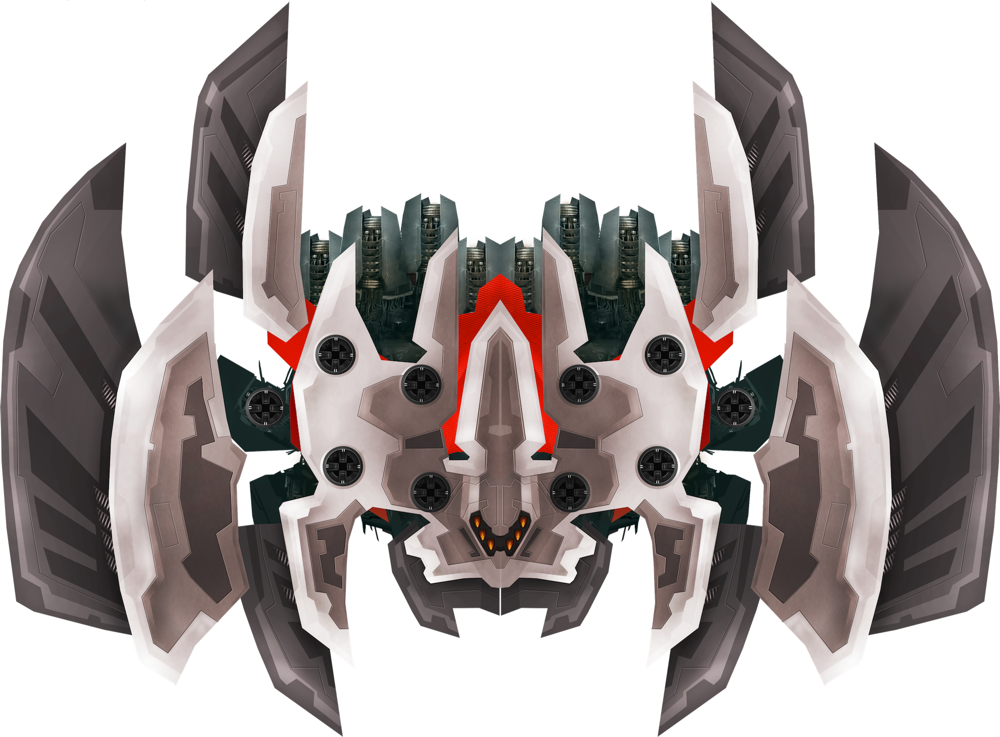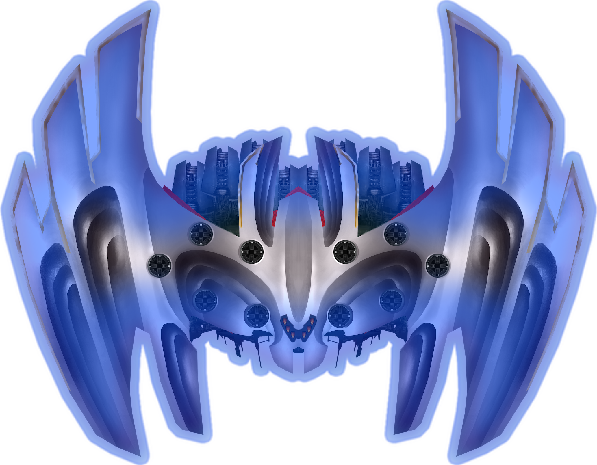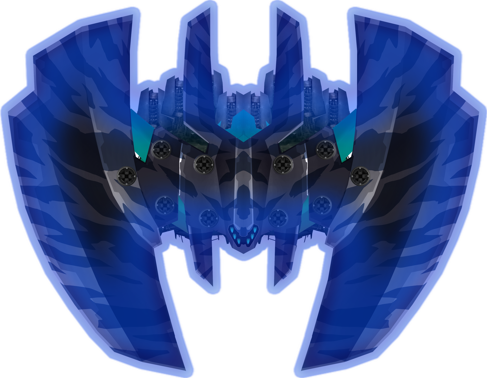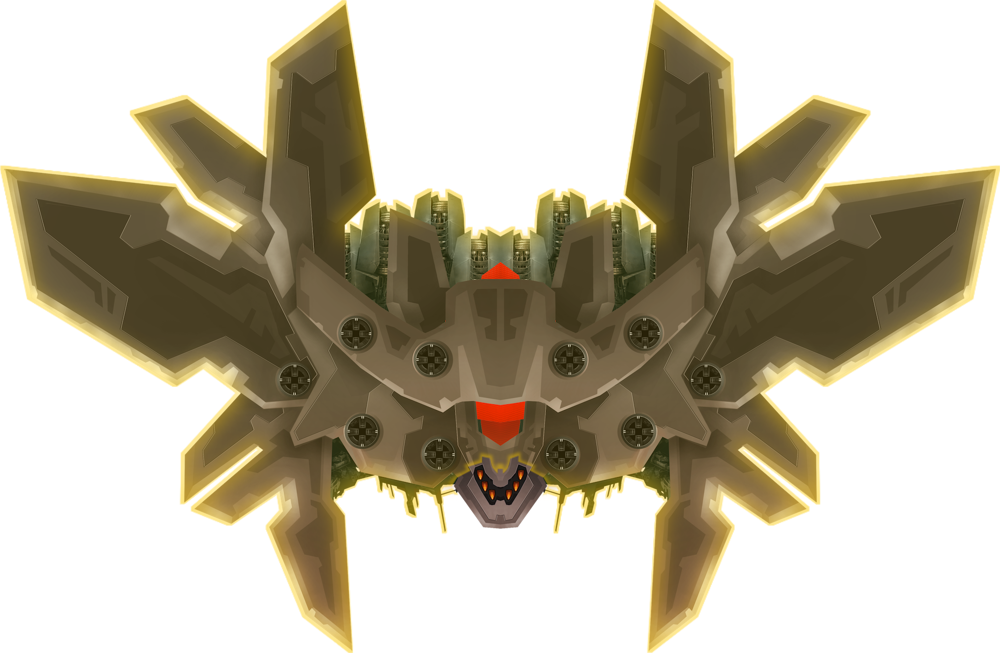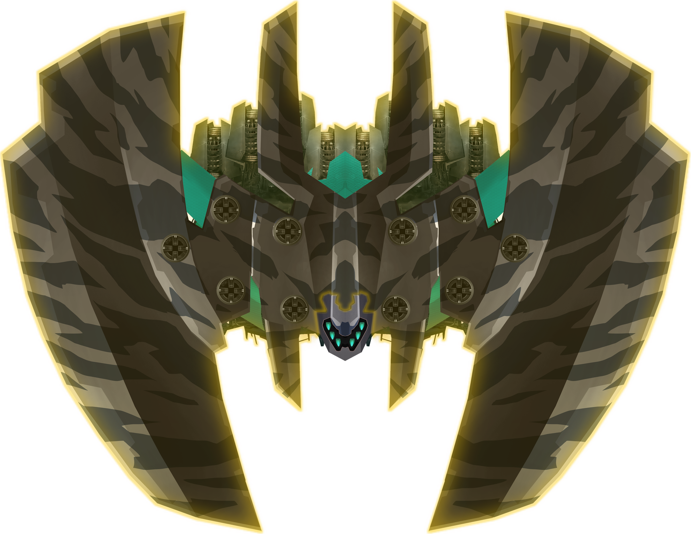
The list of turrets on a Roc is identical to that of Vultures  . Every turret slot can hold any possible turret.
. Every turret slot can hold any possible turret.
| Score when destroyed | 1500 |
|---|---|
| Energy given when destroyed | 90 |
| XP gained when destroyed | 180 |
| Earliest Appearance | Act 5 |
| Wave Arrival Speed | 90 |
| Hover Speed | 15 |
It is frequently accompanied by a "welcoming party" which can be as heavy as 2 Eagles and a Heron  , or as light as Ravens (+ possible Sparrows
, or as light as Ravens (+ possible Sparrows  ). Sparrow only "welcoming party" is possible with only community missions
). Sparrow only "welcoming party" is possible with only community missions  .
.
- These smaller enemies come in immediately while the Roc will take the full 8s to arrive after the wave counter has changed.
- It is possible to have a Roc without any other Invaders come in when the wave starts, which occurs only in daily
 and specialist
and specialist  missions.
missions. - Invaders cannot appear behind a Roc.
The health of the different affinities of Rocs are as shown. All Turrets on a Roc have the same health and are shown below.
- Unprotected = 810 HP. Turret Health = 48.6 HP.
- Shielded = 405 HP Shield + 540 HP Body. Turret Health = 32.4 HP.
- Armored = 729 HP. Turret Health = 43.74 HP.
Trivia 1: All Invaders in Phoenix 2 are named after birds. However, Rocs are named after the mythical bird of the same name. In mythology, rocs have talons large enough to hold an elephant, as shown below:
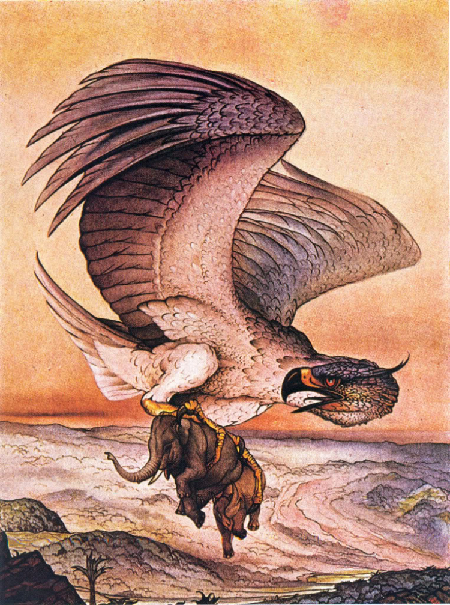
Trivia 2: Here's a fun image made by the devs of an impossible formation of 2 Shielded Assault Condors and 1 Shielded Assault Roc. Note that Shielded Assault Invaders don't currently appear. Perhaps they don't seem to look particularly pretty? Also, most of the in-game effects (especially the cockpit flare of Condors and Rocs) are absent in this image which makes these Invaders look very crisp and clear.
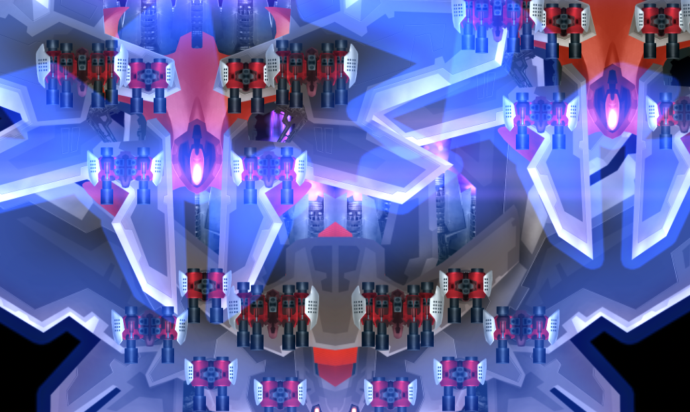
Satellite
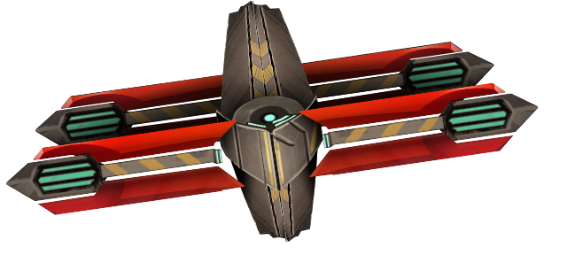
This special enemy only appears in Campaign Missions #24 & #25.
| Affinity | None. All weapons deal normal damage. Not even High Impact |
|---|---|
| Health | 120 |
| Turrets | None |
| Score when destroyed | 50 |
| XP gained when destroyed | 10 |
| Wave Arrival Speed | 250 |
| Hover Speed | 10 |
Effective Health of Invaders
- Armored Invaders have 90% health of Unprotected Invaders, rounded down to the nearest integer.
- Invader Shields have 2/3 the health of Unprotected Invaders, while the health of Shielded Invaders after their shield is downed are exactly ½ the health of Unprotected Invaders, both rounded down to the nearest integer.
Here's a more detailed table showcasing the effective health of Invaders.
- For Shielded Invaders [denoted as x+y], x is the effective shield health, while y is the effective health of the Invader after the shield is downed i.e. the Invader's body.
- For Armored Invaders [denoted as a (b)], a is the effective health if the damage is ALWAYS dealt to the body of Invaders, while b is the effective health if damage is ALWAYS dealt to the cockpit of Invaders.
- Unlike other invader-classes, a Sparrow's
 cockpit is completely protected by armor (just like Invader shields). This means a Sparrow's cockpit is functionally the same as a Sparrow's body.
cockpit is completely protected by armor (just like Invader shields). This means a Sparrow's cockpit is functionally the same as a Sparrow's body. - This means non-Armor Piercing weapons will always suffer armor damage reduction when dealing against Armored Sparrows (and High Impact
 weapons cannot deal critical damage). Thus, the effective health for Armored Sparrows will be reflected as simply a without (b).
weapons cannot deal critical damage). Thus, the effective health for Armored Sparrows will be reflected as simply a without (b).
- Unlike other invader-classes, a Sparrow's
- A red colored number mean that the respective health is lowered because of a High Impact weapon.
- A blue colored number mean that the respective health is lowered because of a Shield Breaker
 weapon.
weapon. - An amber colored number mean the respective health is maintained instead of increased because of using an Armor Piercing
 weapon.
weapon.- A number in italics, bold & underlined means that the respective health is increased because of armor damage reduction.
- Note that the effective health for High Impact weapons is calculated based on the average boost, taking into account the critical hit rate.
| Invader | Weapon Affinity | |||||||||||
|---|---|---|---|---|---|---|---|---|---|---|---|---|
| None (Aura | High Impact | Shield Breaker | Armor Piercing | |||||||||
| Invader Affinity | ||||||||||||
| Unprotected | Shielded | Armored | Unprotected | Shielded | Armored | Unprotected | Shielded | Armored | Unprotected | Shielded | Armored | |
| Sparrow | 5 | 2+3 | 5.7 | 4.4 | 2+2.7 | 5.7 | 5 | 0.8+3 | 5.7 | 5 | 2+3 | 4 |
| Raven | 27 | 13+18 | 34.3 (24) | 24 | 13+16 | 34.3 (21.3) | 27 | 5.2+18 | 34.3 (24) | 27 | 13+18 | 24 (24) |
| Heron | 63 | 31+42 | 80 (56) | 56 | 31+37.3 | 80 (49.8) | 63 | 12.4+42 | 80 (56) | 63 | 31+42 | 56 (56) |
| Eagle | 110 | 55+73 | 141.4 (99) | 97.8 | 55+64.9 | 141.4 (88) | 110 | 22+73 | 141.4 (99) | 110 | 55+73 | 99 (99) |
| Vulture | 270 | 135+180 | 347.1 (243) | 240 | 135+160 | 347.1 (216) | 270 | 54+180 | 347.1 (243) | 270 | 135+180 | 243 (243) |
| Condor | 450 | 225+300 | 578.6 (405) | 400 | 225+266.7 | 578.6 (360) | 450 | 90+300 | 578.6 (405) | 450 | 225+300 | 405 (405) |
| Roc | 810 | 405+540 | 1041.4 (729) | 720 | 405+480 | 1041.4 (648) | 810 | 162+540 | 1041.4 (729) | 810 | 405+540 | 729 (729) |